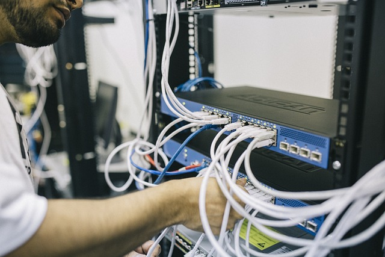

Communication et réseau entre applications
Texte d'introduction à insérer ici même
-

Administrateur réseaux
L'administrateur réseau veille au bon fonctionnement des systèmes de télécommunications grâce auxquels les différents sites ou bureaux d'une entreprise échangent des informations. Il intervient en cas de problème technique. C'est lui qui réceptionne et installe les matériels informatiques et de télécommunications en veillant à leur compatibilité et qui signale les dysfonctionnements à l'ingénieur télécoms et réseaux.
-

Ingénieur en télécoms
Spécialisé dans la recherche et le développement, l'ingénieur télécoms n'a de cesse d'expérimenter les technologies les plus récentes et diverses dans l'optique d'améliorer les techniques de communication dans les domaines de la téléphonie fixe ou mobile, mais aussi d'internet, etc.
-
Ingénieur radiofréquences
Un ingénieur RF est un ingénieur radiofréquences qui exerce son métier dans l’industrie des systèmes de télécommunication, de l’aéronautique et du spatial. Il gère les signaux analogiques et numériques et règle tous les besoins liés aux ondes de courte ou longue fréquence. Son savoir-faire est essentiel pour la téléphonie mobile, le Wi-Fi, les radars et les communications avec les satellites et entre les drones. Son métier se déroule également dans le domaine de la recherche et développement de cette industrie.
-
Monteur FFTH
Le monteur FFTH a pour mission de réaliser des pré-études en relevant des tracés précis pour faciliter le câblage puis d'installer les équipements de télécommunications nécessaires au passage de la fibre optique, dite très haut débit. Il intervient sur les réseaux de communication, il assemble les différents éléments et prépare les raccordements aux boîtiers, il effectue l'entretien ou le dépannage des lignes, il doit pouvoir souder la fibre optique, analyser les flux sur la ligne et raccorder chaque abonné en initialisant les appareils. Le monteur FFTH doit savoir lire un plan et un graphique et doit être capable d'utiliser des appareils de mesure et d'analyser les résultats.
-
Responsable télécoms
Le responsable télécoms et réseaux est chargé de la gestion des infrastructures de télécommunication de l'entreprise. Considéré comme un maître d'ouvrage vis-à-vis des opérateurs et comme un maître d’œuvre et un prestataire de services interne vis-à-vis des autres directions de l'entreprise, ses missions vont de la définition de l'architecture à l'achat de services télécoms, en passant par le contrôle de gestion et la veille au sens large. Le responsable télécoms et réseaux peut être chargé du déploiement et de l'exploitation de l'infrastructure, ainsi que de la gestion et de l'encadrement d'une équipe télécoms. Son champ d'action recouvre les services voix, données et les services internet de l'entreprise au niveau national et international.
-
Technicien réseaux/télécoms
Le technicien réseaux / télécoms est garant du bon fonctionnement et de la disponibilité des réseaux ou des télécoms dont il a la responsabilité. Il assure la prévention des dysfonctionnements des réseaux ou des télécoms et contribue au bon fonctionnement du système d'information. Il possède quatres tâches qui sont suivantes:
Installation et test
Administration et sécurité
Exploitation
Support